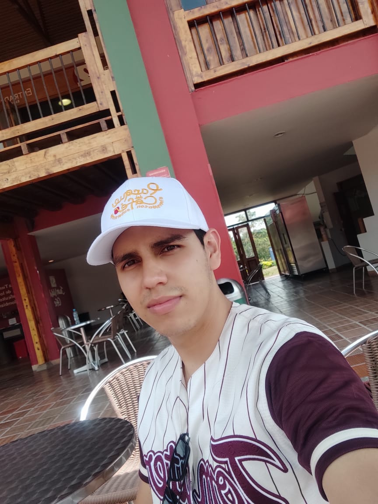

Nicolas Velasquez | WDD 130
Hello Everyone, my name is Nicolas Velasquez, I'm 23 years old, and I'm from Colombia. I've served a mission in Mexico Culiacan Mission, and I've programmed in Python, Java, C++, actually I'm working like website builder in a Real Estate Startup. I'm happy to start to learn in this course!